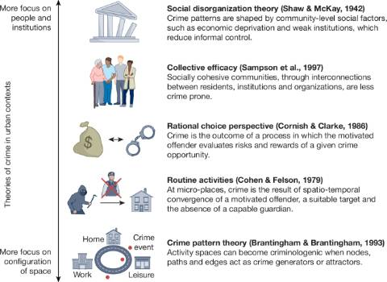
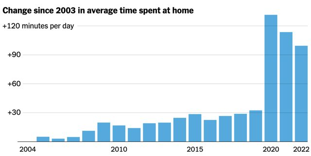

Patrick Sharkey is the William S. Tod Professor of Sociology and Public Affairs at Princeton’s School of Public and International Affairs. His research centers on the challenges created by urban inequality, with a particular focus on community violence. Sharkey leads the Violence and Inequality Project at Princeton, a multidisciplinary effort to build a research infrastructure more useful to policymakers and community organizations working to confront violence. He recently received the 2026 Faculty Teaching Award selected by the graduating class of Princeton Sociology undergraduates, and was named as one of the World’s Top 50 Thinkers by Prospect Magazine. His most recent book is titled Uneasy Peace: The Great Crime Decline, the Renewal of City Life, and the Next War on Violence.
Email: psharkey@princeton.edu
Recent News

